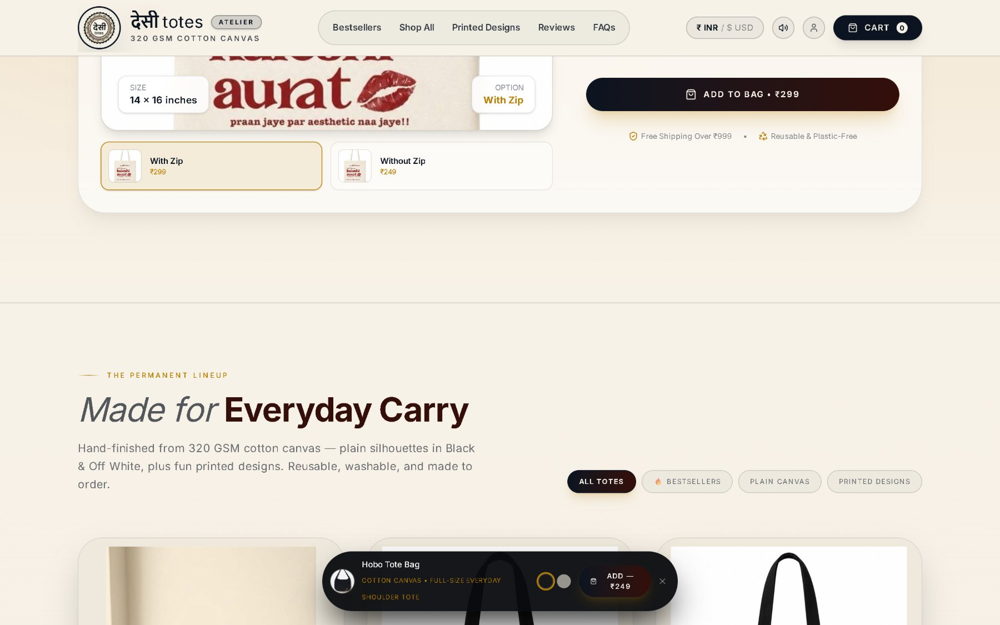
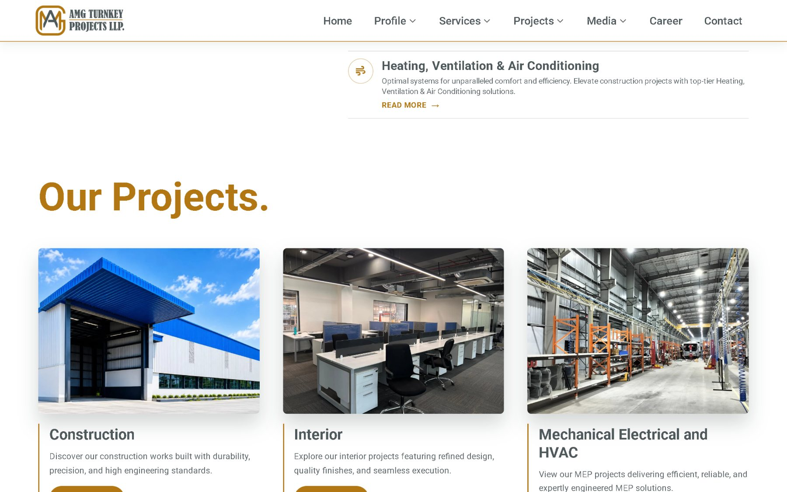

Sahil Pathak
Everything here is live.
A construction and interiors firm in Pune. A cotton canvas label that makes every bag to order. Two real businesses with real customers, and both are one click away from this sentence.
Chapter one
The brief
I build the front of websites, and then I keep working on them after they go up, which is the part that decides whether they are any good.
The two projects in this document are not exercises. One is the public face of a construction company that people call to build a factory. The other takes card payments for a tote bag and has to be right about the price, the size and the shipping. Neither of them gets to be approximately finished.
The work is React and Vite, with Tailwind for the system and GSAP where scroll has to carry meaning. Node, Express and MongoDB behind it when the page needs to remember something.
Fig. 1 Title block.
Chapter two
Cloth
Desi Totes. A canvas tote label that cuts, prints and finishes every bag after the order comes in.

The brief for a made to order shop is different from a catalogue. There is no warehouse behind it, so the page has to be precise about what a customer is actually buying and honest about what happens next. Fabric weight, finished size, zip or no zip, and the price difference between them, all stated before anyone reaches a cart.
It runs a live currency switch, a persistent bag, and a quick add strip that follows you down the page without ever covering the thing you are reading.
- Fabric
- 320 GSM cotton canvas
- Printed size
- 14 × 16 in
- Colours
- Black, Off White
- With zip
- ₹299
- Without zip
- ₹249
- Free shipping
- Over ₹999
- Currencies
- INR, USD
- Made
- To order, in India


Fig. 3 Four of the printed range. Screen printed by hand, zip optional on every design.

Live at desitotes.com.
Chapter three
Structure
AMG Turnkey Projects LLP. An ISO certified construction and interiors firm in Pune that builds the shed, fits it out, and runs the services through it.
A pre engineered steel portal frame, drawn complete: four bays of foundation pads, columns, rafters, purlins, cladding, and the service runs below the roof.
- 01 Foundation pads set out, four bays.
- 02 Columns raised and plumbed.
- 03 Rafters landed, portal closed.
- 04 Purlins, sheeting and cladding.
- 05 MEP and HVAC run below the roof.
Drag to look around.
That is the shape AMG manufactures, and the site had to carry all of it: six service lines, three project categories, a corporate profile request, and offices in three states.
The figures below belong to AMG and are published on their own site. They are their record, not mine. My part of it was the front end.
- Founded
- 0+ years
- Projects finished
- 0+
- Repeat orders
- 0%
- Certification
- ISO certified
- Offices
- Maharashtra, Odisha, Chhattisgarh
- Scope
- Civil, PEB, interiors, modular furniture, MEP, HVAC



Live at amgprojectsllp.com.
Chapter four
Workbench
Things built to find out whether they could be. No clients, no traffic, and listed here as what they are.
-
AiCompiler
- What
- An editor in the shape of VS Code that suggests machine learning snippets from a trained model as you type.
- Stack
- React, Vite, Node
- Status
- Personal project
-
AI Terminal
- What
- A terminal surface for chatting against a model and pulling a URL apart in the same session.
- Stack
- React, Node, Express
- Status
- Personal project
-
AI Ecommerce
- What
- A storefront used to work out how far a model can go in a buying flow before it stops being useful.
- Stack
- React, MongoDB
- Status
- Personal project